設備トラブルの呼び出しや休日工事で、予定が立たない。この働き方を、あと何年続けるのだろう。
31歳・生産技術生産技術職に特化した転職エージェント

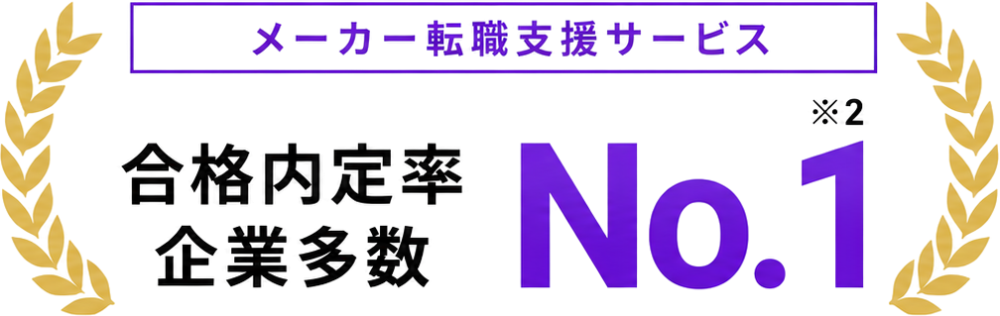
※Googleビジネスプロフィールの口コミ評価4.9・600件以上（2026年7月時点）。年収UP率は転職成功者、短期離職率は入社者を対象とした当社集計。※1 Google Business Profileのレビュー件数500件以上かつ当社調べ
※2 複数企業で決定率No.1を受賞
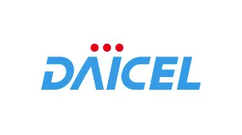
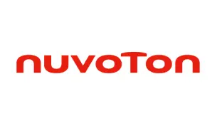
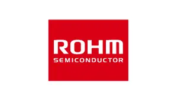
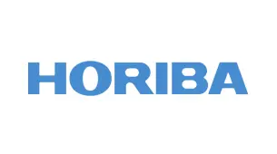
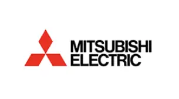
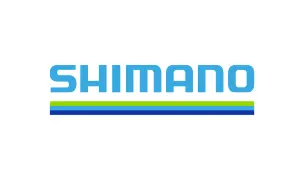
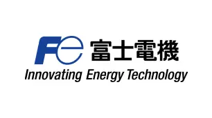
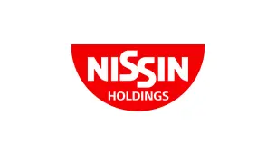
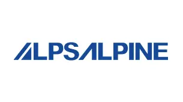
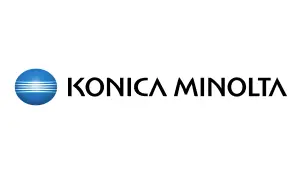
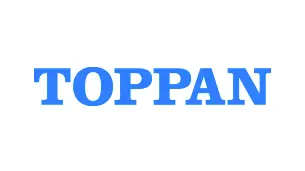
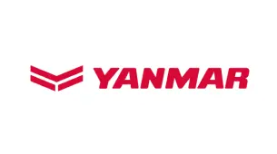
設備トラブルの呼び出しや休日工事で、予定が立たない。この働き方を、あと何年続けるのだろう。
31歳・生産技術工数削減や品質改善で成果を出しても、評価は上司の主観次第。技術力で昇格する道が見えない。
28歳・生産技術全国転勤の可能性があり、家族のことを考えると不安。勤務地を自分で選べないのがつらい。
34歳・生産技術
身についたのは自社設備の知識ばかり。他社で通用するのか、確かめる方法がない。
33歳・生産技術経験を正しく捉え、休日・勤務地・裁量の実態まで確かめる。
納得できる一社をご提案します。
工程最適化、設備導入、自動化、改善活動は異業種でも評価される力です。設備名ではなく、QCD・設備・データの成果として棚卸しします。
組立ラインの設備保全・改善を7年間担当。設備トラブル対応や工程改善に従事。
PLCによる搬送設備の改修から量産立ち上げまで担当。段取り替えの見直しで、設備稼働率を92%→97%へ改善。
突発対応の頻度、休日工事の回数、転勤の条件、任される裁量。入社後のギャップになりやすい点を、企業へ確認してからご案内します。
年収、勤務地、休日、仕事内容。希望をそのまま検索条件にするのではなく、転職で変えたいことと守りたいことを整理します。判断軸を揃え、納得できる選択肢だけをご提案します。
この判断軸をもとに、合う求人だけをご提案
転職を決める前でも大丈夫です。
まずは、経験から選べる可能性を確認しませんか。
マッチング精度や選考成果を評価され、
メーカー各社のエージェントアワードを受賞しています。
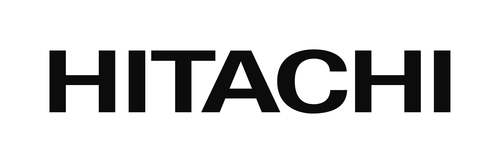
HITACHI AGENT AWARD 2025
求人要件とキャリア志向を結びつける、精度の高い提案力が評価されました。
3年連続受賞
IHI AGENT AWARD 2025
経歴や志向を踏まえたマッチング精度と、選考成果が評価されました。
2年連続受賞
OMRON / 2024年度
キャリア採用への貢献と、応募者の高い選考通過率が評価されました。
2年連続受賞
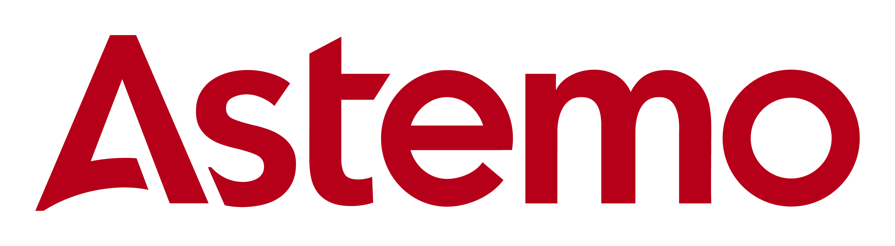
ASTEMO AGENT AWARD 2026
技術領域への深い理解と、短期間での採用決定実績が評価されました。
契約翌月から
採用決定
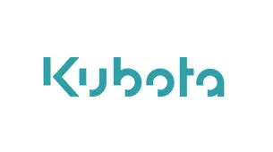
KUBOTA AGENT AWARD 2023
採用決定数の飛躍的な伸びと、コンサルティング品質が評価されました。
決定数の伸び1位
※各社が主催するキャリア採用領域のエージェントアワードにおける受賞実績です。
左右にスワイプして求人例をご覧ください。
公開求人の間に、一般には出していない非公開求人も混ざっています。
※公開求人の内容は一例です。募集状況やご経験によりご紹介可能な求人は異なります。
※「非公開求人」はイメージです。実際のご紹介内容は面談でご案内します。
年収・働き方・仕事内容。
何をどう変えたか、実際の事例でご覧ください。
31歳・生産技術（自動車部品）→ 完成車メーカーへ
転職者の声★★★★★「設備導入と改善の実績を具体化したことで、より上流の設備企画へ進めました。」

29歳・生産技術（電子部品）→ 半導体製造装置メーカーへ
転職者の声★★★★★「呼び出しと休日工事に追われる毎日から、計画的に立上げを進める働き方に変わりました。」
34歳・生産技術（素材メーカー）→ 勤務地限定の大手メーカーへ
転職者の声★★★★★「転勤の不安から、家族を理由に諦めていた転職でした。勤務地を軸に探してもらえたのが決め手です。」
27歳・生産技術（食品機械）→ 工場DX部門へ
転職者の声★★★★★「現場の知識を、データ分析や自動化に活かせる環境を提案してもらいました。」
36歳・生産技術（重工）→ 技術専門職コースへ
転職者の声★★★★★「管理職以外の道があると知らなかった。専門性を評価してもらえる会社に出会えました。」
32歳・生産技術（電機）→ ロボットメーカーへ
転職者の声★★★★★「自社設備の経験が、ロボットやAIの現場導入という新しい領域で評価されました。」
※事例は仮のサンプルです（公開前に実績へ差し替え）。
同じ生産技術でも、選べる道は人それぞれ。
あなたの場合の選択肢を個別にご案内します。
転職時期が未定でも、相談できます。
転職を無理に勧めることはありません。
条件整理から書類・面接対策、年収交渉まで最短ルートで伴走します。
今の会社に残る選択肢も含めて、キャリアの棚卸しからお手伝いします。
いま動いたら何が選べるのか。相場観と選択肢だけ知って帰れます。
工場の現場、設備、採用を知る担当者が、
企業選びから書類・面接対策まで一貫して支援します。
登録から内定まで、すべて無料。
書類作成や企業との日程調整も担当者が代行します。
フォーム入力は約60秒。今すぐ転職しなくても大丈夫です。
所要 約60秒平日夜・土曜、オンラインもOK。譲れない条件を一緒に整理します。
約60分・オンライン可働き方の実態を確認した求人だけを、理由つきでご案内します。
条件に合う求人のみ職務経歴書は一緒に作成。企業ごとに面接の想定問答を準備します。
日程調整も代行年収交渉、退職の進め方、入社後のフォローまで支援します。
年収交渉も担当登録後は、担当者が日程調整から選考対策まで伴走します。
無料相談を申し込む ›完全無料です。採用企業から紹介料をいただく仕組みのため、求職者の方に費用が発生することは一切ありません。
通用します。工程の最適化、設備導入、自動化、改善活動は業界をまたいで評価される力です。設備名ではなく成果として整理し、職務経歴書を一緒に作ります。
求人ごとに、輪番制の有無・休日工事の回数・代休の取得実態などを企業へ確認してからご案内します。求人票に載っていない点もお聞きします。
勤務地限定の求人や、転勤がほとんどない求人もあります。希望エリアと転勤の可否を最初に伺い、条件に合うものだけをご提案します。
ご希望の連絡手段と時間帯を最初に伺い、それ以外の連絡はしません。今回は見送るとお伝えいただければ、ご案内も止めます。
転職を決めていなくても構いません。
生産技術の経験で選べる求人と、年収・休日・勤務地の可能性を、
一度いっしょに整理しませんか。